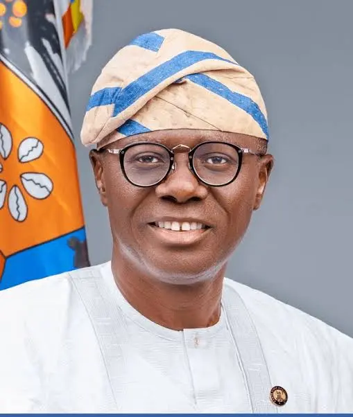

Security & Crime · 01 Nov 2026
VIDEO: Sanwo-Olu joins models on Lagos Fashion Week runway

Lagos State Governor, Babajide Sanwo-Olu, surprised attendees by walking the runway at Lagos Fashion Week in a collection by designer Ugo Monye. Read More: https://punchng.com/video-sanwo-olu-joins-models-on-lagos-fashion-week-runway/
Multiple independent publishers are reporting on the same development: VIDEO: Sanwo-Olu joins models on Lagos Fashion Week runway.
The available reports place the development in the Security & Crime category. The accounts were compared for agreement on the central event rather than simply shared names or broad topics.
One of the available reports describes the development this way: Lagos State Governor, Babajide Sanwo-Olu, surprised attendees by walking the runway at Lagos Fashion Week in a collection by designer Ugo Monye. Read More: https://punchng.com/video-sanwo-olu-joins-models-on-lagos-fashion-week-runway/
Readers should consult the linked source reports for additional context, updates and details that may change as the story develops.
Sources
This article was produced by the C. O. Eric AI Newsroom from the cited sources. It is published only after automated evidence and safety checks.